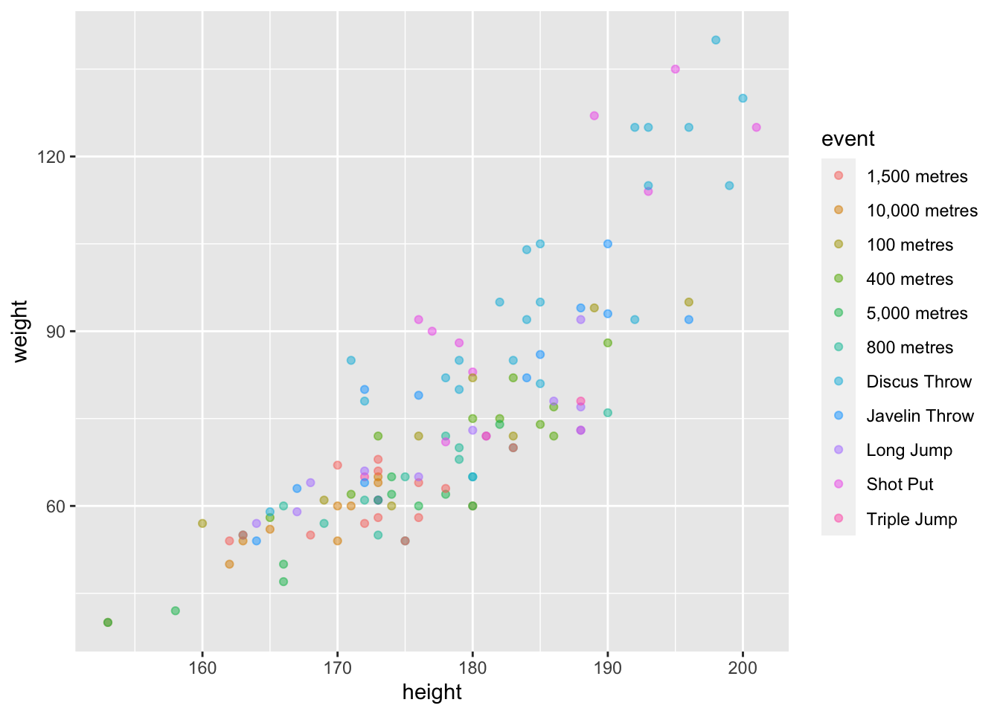
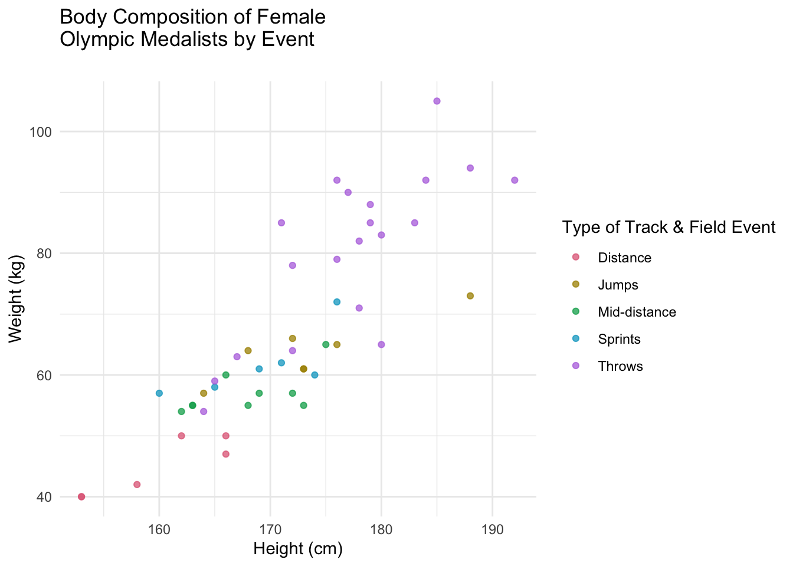
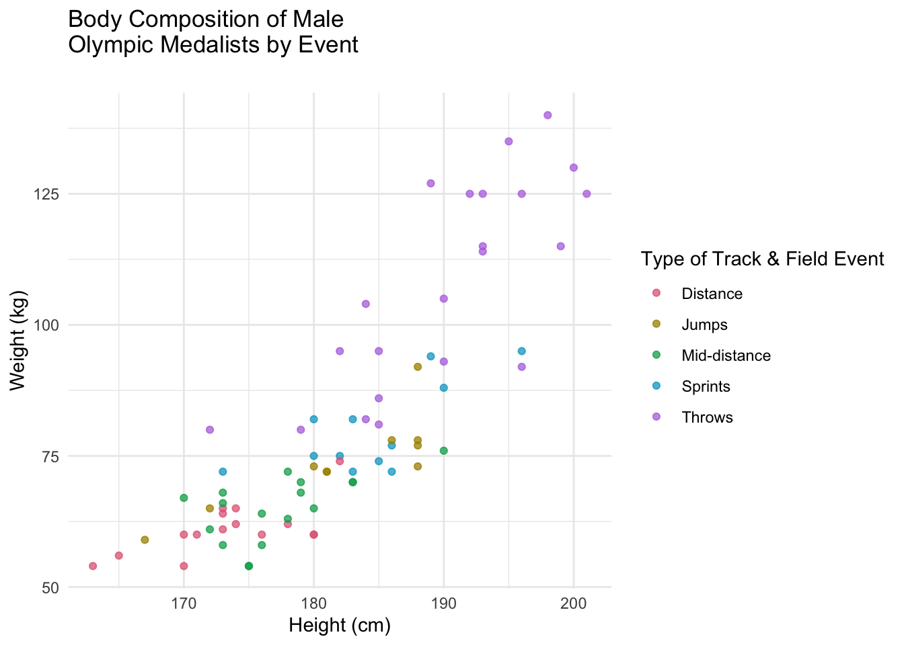

Visualization of the body composition of the athletes in different track and field events. Data from #TidyTuesday.
Published
February 5, 2023
As a track and field athlete and fanatic, I have noticed that specific events seems to attract specific body compositions. Thus, I was curious see if there was data supporting the idea that certain body compositions are more ideal for certain events. In this project, I will be using data from the Tidy Tuesday GitHub repository from July 27, 2021 on the Olympics to examine the body compositions of Olympic track and field medalists over the years.
Look at the code
# load packages and read in data from tidyTuesdaylibrary(tidyverse)library(colorspace)library(patchwork)olympics <- readr::read_csv('https://raw.githubusercontent.com/rfordatascience/tidytuesday/master/data/2021/2021-07-27/olympics.csv')head(olympics)
# A tibble: 6 × 15
id name sex age height weight team noc games year season city
<dbl> <chr> <chr> <dbl> <dbl> <dbl> <chr> <chr> <chr> <dbl> <chr> <chr>
1 1 A Dijiang M 24 180 80 China CHN 1992… 1992 Summer Barc…
2 2 A Lamusi M 23 170 60 China CHN 2012… 2012 Summer Lond…
3 3 Gunnar N… M 24 NA NA Denm… DEN 1920… 1920 Summer Antw…
4 4 Edgar Li… M 34 NA NA Denm… DEN 1900… 1900 Summer Paris
5 5 Christin… F 21 185 82 Neth… NED 1988… 1988 Winter Calg…
6 5 Christin… F 21 185 82 Neth… NED 1988… 1988 Winter Calg…
# … with 3 more variables: sport <chr>, event <chr>, medal <chr>
Look at the code
# I am interested in looking at track and field (athletics) medalistsathletics <- olympics %>%filter(sport=="Athletics",!is.na(medal))
Once I filtered the data to only track & field medalists, I separated by sex and plotted their height and weight by event.
There were too many events and the names were extremely messy so I chose only a few representative events and grouped them together by event type into either Distance, Mid-Distance, Sprints, Jumps, or Throws. I then plotted the female data again to see the new cleaned graph.
Look at the code
# there are so many events so lets choose a few events that represent some categories# distance: 10k, 5k# mid-distance: 800m, 1500m# sprints: 100m, 400m# jumps: long jump, triple jump# throws: shot put, discus, javelinathletics$event <-gsub("Athletics Women's ", "", athletics$event)athletics$event <-gsub("Athletics Men's ", "", athletics$event)athletics <- athletics %>%filter(event ==c("10,000 metres", "5,000 metres", "800 metres","1,500 metres", "100 metres", "400 metres", "Long Jump", "Triple Jump", "Shot Put", "Discus Throw", "Javelin Throw"))athletics %>%ggplot(aes(height, weight, color=event))+geom_point(alpha=0.5)

Look at the code
# this is still too much, let's group themathletics <- athletics %>%mutate(event_type =case_when( event %in%c("10,000 metres", "5,000 metres") ~"Distance", event %in%c("800 metres","1,500 metres") ~"Mid-distance", event %in%c("100 metres", "400 metres") ~"Sprints", event %in%c("Long Jump", "Triple Jump", "High Jump") ~"Jumps", event %in%c("Shot Put", "Discus Throw", "Javelin Throw") ~"Throws",))# now it's time to subset by sexathletics_f <- athletics %>%filter(sex=="F")athletics_m <- athletics %>%filter(sex=="M")# plot femaleathletics_f %>%ggplot(aes(height, weight, color=event_type))+geom_point(alpha=0.5)
This is a much easier graphic to understand so I decided to beautify it.
Look at the code
# putting it together(( p1 <- athletics_f %>%ggplot(aes(height, weight, color=event_type))+geom_point(alpha=0.75)+theme_minimal()+scale_color_discrete_qualitative("Dark 3")+labs(title="Body Composition of Female \nOlympic Medalists by Event\n", x="Height (cm)", y="Weight (kg)", color="Type of Track & Field Event") ))

We see that female throwers generally tend to be larger (heavier and taller) while distance runners tend to be smaller (lighter and shorter) than the other athletes. Jumpers appear to either be rather tall (likely due to the high jumpers) or have a similar body composition to the sprinters. The short sprinters are in the middle of the pack, they do not appear to be skewed toward either end of either axis, while the mid-distance runners are slightly lighter and shorter than the short sprinters. The sprinters seem to have a similar body type to each other hovering around 170 cm and 60 kg.
Look at the code
# putting it together(( p2 <- athletics_m %>%ggplot(aes(height, weight, color=event_type))+geom_point(alpha=0.75)+theme_minimal()+scale_color_discrete_qualitative("Dark 3")+labs(title="Body Composition of Male \nOlympic Medalists by Event\n", x="Height (cm)", y="Weight (kg)", color="Type of Track & Field Event") ))

Again, we see similar trends among the male Olympic medalists to the female ones. Throwers dominate the upper right quadrant, meaning they tend to be taller and heavier than the other athletes. Like female distance runners, male distance runners tend to be lighter and shorter than other athletes. Jumpers and sprinters seem to have similar body types with mid-distance runners having a body composition between short sprinters and distance runners.
I was surprised to see that throwers are so much taller than other athletes because I was assuming that jumpers would far and away be the tallest due to high jumpers. I think that throwers must be both tall and heavy in order to generate the massive amount of force that is required to become an Olympic medalist. The other thing that surprised me was also related to height. Distance runners tended to be shorter than other athletes which was not something that I had noticed before this. I think this has to do with height to weight ratio. Since I assume being light is advantageous for distance runners, being shorter and thus lighter would likely help them.
Overall, I think that these data are showing similar trends to what I have personally observed about these events. I think that the data are showing that these events attract people of specific sizes, likely because there is some type of advantage to having that build.